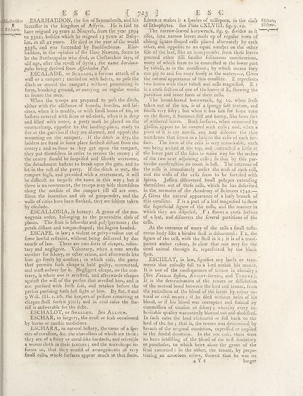

Scan ID britannica:309f765b1ecc83e0a7f7762e44b4a927a7555443:train:1473
Image SHA-256 b3b602ef6a3d4961fd1926a15d634a40ec929c15b00e2f7cc5109b3f7180daac
Status: ok. Running header: ESC 1723 I ESC (catchword). Removed page furniture: Page-header: ESC 1723 I ESC, Page-footer: 4 X Z R longer.
PDF · raw Parse reply · LaTeX
Entries: ESARHADDON ESCALADE ESCALDOLIN ESCAPE ESCHALOT ESCHAR ESCHARA ESCHEAT

| # | Class | Box | Parse 3.5 | Used text | Source |
|---|---|---|---|---|---|
| 1 | Text | [0.0742, 0.0398, 0.459, 0.1789] | ESARHADDON, the fen of Sennacherib, and his favorite in the Baylorion of Alfryen. He is faid have reigned to 9 years at Church, from the year 1904 to 3322; believe which he reigned 13 years at Baby- ton, in all 8 years. He died in the year of the week SSS, and was faceded by Sandoshina. Elar- haddon, in the opinion of Sir Ilane Newton, feems to be the Shanghai who often, as Catecharina fayo, old way after the result of Syria, the name _Bekriamo_ polar being derived from _Afrhadon Pal._ | ESARHADDON, the son of Sennacherib, and his successor in the kingdom of Assyria. He is said to have reigned 29 years at Nineveh, from the year 3294 to 3322; besides which he reigned 13 years at Baby- lon, in all 42 years. He died in the year of the world 3336, and was succeeded by Saosduchinus. Esar- haddon, in the opinion of Sir Isaac Newton, seems to be the Sardanapalus who died, as Ctesias says, of old age, after the revolt of Syria; the name Sardana- palus being derived from Asarhaddon Pul. | super_vl |
| 2 | Text | [0.0752, 0.1797, 0.458, 0.2461] | ESCAMADE, or Sealana a farism attack of a wall on a rampart; carnivore with ladders, to pafs the ditch or mount the rampart; without proceeding in forsp, breaking ground, or carrying on regular works of feature the menu. | ESCALADE, or SCALADE, a furious attack of a wall or a rampart; carried on with ladders, to pass the ditch or mount the rampart; without proceeding in form, breaking ground, or carrying on regular works to secure the men. | super_vl |
| 3 | Text | [0.0762, 0.2469, 0.4639, 0.5281] | When an throws are prepared to pafs the ditch, clicks with the affilance of bounds, humble, and life cines, when it is muddy, or with fault boats of tin, or baskets covered with films or collected, where it is deep and filled with water, a party must be placed on the counterfeary opposite for the loading-place, ready to fire at the garden if they are alarmed, and good the mounting on the rampart. It the ditch is dry, the ladders so fixed in Some place fartheit diflant from the century and a four as they get upon the rampart they put themforce in order to reverse the enemy; if the country shoul | When the troops are prepared to pass the ditch, either with the assistance of boards, hurdles, and fascines, when it is muddy, or with small boats of tin, or baskets covered with skins or oil-cloth, when it is deep and filled with water, a party must be placed on the counterscarp, opposite to the landing-place, ready to fire at the garrison if they are alarmed, and oppose the mounting on the rampart. If the ditch is dry, the ladders are fixed in some place farther distant from the centre; and as soon as they get upon the rampart, they put themselves in order to receive the enemy; if the centre | super_vl |
| 4 | Text | [0.0771, 0.6242, 0.457, 0.5813] | ESCALDOLIN, In January, a grass off the man magnetor, belonging to the presumiric data of plants. The fruit is bluebar and poly/permons; the petal diftants and longest-lived; the figures headed. | ESCALDOLIN, In January, a grass off the man magnetor, belonging to the presumiric data of plants. The fruit is bluebar and poly/permons; the petal diftants and longest-lived; the figures headed. | parse_fallback · box_too_small |
| 5 | Text | [0.0781, 0.5828, 0.4561, 0.782] | ESCAPE, in how a violent or privyvation out of home lawful reflrant, without being delivered by due course of low. There are two lots of escape, valent bay and negligent. Voluntary, when a amreth another for folony, or other crime, and afterwards lets him go freely by conting, in which cafe, the party that permits fich escapes and dailyly commended and multi author for it. Negligent eleceps, on the con- trany, in where one is arrested, and afterwards deepas against the will of the perform that arred him, and is not purified with fresh guards, and treaken before the person containing lands left | ESCAPE, in law, a violent or privy evasion out of some lawful restraint, without being delivered by due course of law. There are two sorts of escapes, volun- tary and negligent. Voluntary, when a man arrests another for felony, or other crime, and afterwards lets him go freely by consent; in which case, the party that permits such escape is held guilty, committed, and must answer for it. Negligent escape, on the con- trary, is where one is arrested, and afterwards escapes against the will of the person that arrested him, and is not pursued with fresh suit, and retaken before the person purloin | super_vl |
| 6 | Section-header | [0.0791, 0.7828, 0.4229, 0.7961] | ESCHALOT, or Shallot. See ALUM. | ESCHALOT, or Shallot. See Allium. | super_vl |
| 7 | Text | [0.0801, 0.7969, 0.46, 0.8227] | ESCHAR, in foregry, the craft or fish occationed by home or marine medicine. | ESCHAR, in surgery, the crust or scab occasioned by burns or caustic medicines. | super_vl |
| 8 | Text | [0.0811, 0.8234, 0.4551, 0.9047] | ESCHARA, in natural history, the name of a fpec- ence localizing, the the theories of which we in these they are of a study or coral like hardwood, and reminds a woven cloth in their texture; and the microtype ins- forms us, that they confidif arrangements of very small cells, whose furfaces appear much in this form, | ESCHARA, in natural history, the name of a species of coralline, &c. the characters of which are these: they are of a stony or coral-like hardness, and resemble a woven cloth in their texture; and the microscope informs us, that they consist of arrangements of very small cells, whose surfaces appear much in that form. | super_vl |
| 9 | Text | [0.4707, 0.0453, 0.8701, 0.0742] | Linnmus makes it a species of millepora, in the clafs oil hobphory. See Place CLXVII, fig. you. | Linnaeus makes it a species of millepora, in the class of lithophytes. See Plate CXLVIII. fig. 9. to. | super_vl |
| 10 | Text | [0.4717, 0.0766, 0.8545, 0.2477] | The narrow-level borrowback, fig. to divides as it rifes, into narrow leaves made up of regular rows of obbing figures shaped into placed alternates by each other, and opposed to an equal number on the other file of the leaf, like an honeycomb, from their leaves proved, other still familiar difference numifications, many of which femen to be connected at the lower part by tub), as in the corailings; by which means they can play to and for those freely in the waters—Give the natural appearance of this condition. E. reporters two leaves with their shall and cells magnified. E. t is a covid ficti | The narrow-leaved hornwrack, fig. 9, divides as it rises, into narrow leaves made up of regular rows of oblong square-shaped cells placed alternately by each other, and opposite to an equal number on the other side of the leaf, like an honeycomb; from these leaves proceed other still smaller foliaceous ramifications, many of which seem to be connected at the lower part by tubuli, as in the corallines; by which means they can ply to and fro more freely in the waters.—c. Gives the natural appearance of this coralline. E. represents two leaves with their tubuli and cells magnified. E 1 is a cross | super_vl |
| 11 | Text | [0.4727, 0.2484, 0.9893, 0.357] | The broad-leaved brownwork, fig. to, when fresh taken out of the tea, it of a spongy salt texture, and finels very little, but when it has fun for time time on the floor, it becomes iffi and honey, like forms fort of nutrients below. Beff furthest, when examined by glallies, appears to be covered with cells; and, when a piece of it is cut across, one may discover the thin numbers that there was a large to the cell of each face. | The broad-leaved hornwrack, fig. to. when fresh taken out of the tea, is of a spongy soft texture, and smells very filthy; but when it has lain for some time on the floor, it becomes stiff and horny, like some fort of withered leaves. Both surfaces, when examined by glasses, appear to be covered with cells; and, when a piece of it is cut across, one may discover the thin membrane that serves as a base to the cells of each fur- face. The form of the cells is very remarkable, each | super_vl |
| 12 | Text | [0.4736, 0.3578, 0.8828, 0.5664] | The form of the cells is very remarkable, each one being needed at the top, and contracted a littered the lower part of the files to make sure for the reaches of the two next adjoining cells; fo that by this par- ticulus contribution so soon is hold. The utterance of the cells is immediately under the arch, each cell, and the walls of the cells femen to be fortified with ripises. Julfine different fossil polyps extending themselves out of their cells, which lie has identified in the memoirs of the Academy of Sciences 1742-- Gives the natural appearance is a leafy branch of this condition. | The form of the cells is very remarkable, each one being arched at the top, and contracted a little at the lower part of the sides to make way for the arches of the two next adjoining cells; so that by this particular contruction no room is lost. The entrance of the cells is immediately under the arch of each cell, and the walls of the cells seem to be fortified with spines. Jussieu discovered small polypes extending themselves out of these cells, which he has described in the memoirs of the Academy of Sciences 1742.—f, Gives the natural appearance of a leafy branch of this coralline. F is a p | super_vl |
| 13 | Text | [0.4746, 0.5672, 0.8428, 0.6477] | At the entrance of many of the cells a small triflu- cus body like a bivalve shell in discovered; F.z, the figure of the cell, with the fluid in it; it is of a transi- parent anber colours, do clear that one may feel the dead until through its repetiended by the block- fpot. | At the entrance of many of the cells a small testaceous body like a bivalve shell is discovered : F 2, the figure of the cell, with the shell in it ; it is of a transparent amber colour, so clear that one may fee the dead animal through it, represented by the black spot. | super_vl |
| 14 | Text | [0.4756, 0.6492, 0.8477, 0.9055] | ESCHEAT, in law, signifies any lands or ten- parts that cafinally fail to a Lord within his manor. It is one of the confeugence of tenure in divary (See _Fonaa Sylma, Amazon-Serous_, and Texas). If the determination of the course are diflutions of the mutual bond between the loud and tenans, from the extinction of the blood of the latter by other ana- turral or crist means : if the deck without hers of his blood, or if his blood the company and named by comunition of coercion or fidanj , whereby every hori- britable quality was entirely blasted out and doubled, fa fault, cakes the hand echated | ESCHEAT, in law, signifies any lands or tenements that casually fall to a lord within his manor. It is one of the consequences of tenure in chivalry. (See Feodal System, Knight-Service, and Tenure). It is the determination of the tenure or dissolution of the mutual bond between the lord and tenant, from the extinction of the blood of the latter by either natural or civil means: if he died without heirs of his blood, or if his blood was corrupted and tainted by commission of treason or felony; whereby every inheritable quality was entirely blotted out and abolished. In such cases the land esche | super_vl |
Britannica scans: National Library of Scotland, CC0 1.0. Wikipedia text: Wikipedia contributors, CC BY-SA 4.0, revision links on each page. Generated 2026-10-18T13:26:14+00:00.